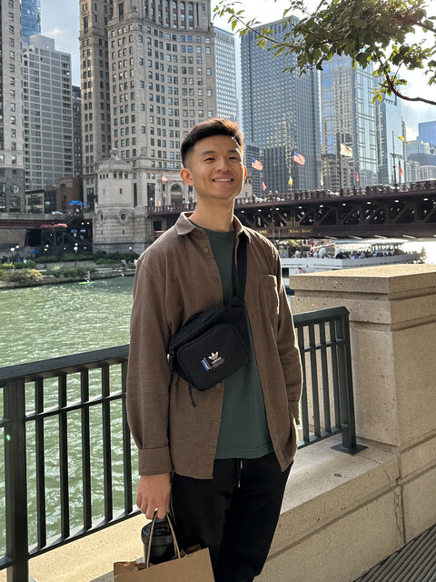

Hello! I'm Harrison, a robotics software engineer experienced in developing mobile robotics systems. I'm a self-motivated learner and capable problem solver, and I strive to use my abilities to work on technologies that will help others. Thanks for stopping by!
Work
Senior Software Engineer, Algorithms @ Hayden AI
2026 - Present
[(tbd)]
Working on new computer vision systems with the Pilots team.
Senior Robotics Software Engineer @ OKSI
2025 - 2026
[c++, ros 2, docker, ci/cd, ansible, mavlink]
Debugged, integrated, and deployed GPS-denied visual navigation systems onto customer vehicles, while also maintaining the monorepo's CI/CD pipelines and build system.
Autonomy Engineer @ PDW
2022 - 2025
[c++, ros 1, eigen, pcl, pytorch, px4]
Built out the autonomy stack for a quadcopter, with primary contributions in trajectory generation, path planning, 3D mapping, and learning-based depth estimation.
Robotics Engineer @ Jugaad Labs
2021 - 2022
[python, ros 1, opencv, kalman filter, sensor calibration]
Worked on an automotive situational awareness system that uses object detection and tracking on nearby vehicles and pedestrians to identify risk factors for semi-truck drivers.
About

Education: MS Robotics @ University of Michigan, BS Mechanical Engineering @ Northwestern University
Interests: soccer, running, cooking, dance, board games, the Detroit Pistons, environmental sustainability
Goals: improve proficiency with debugging tools, create a personal project with GTSAM, engage more with hobbies that are not outcome-driven